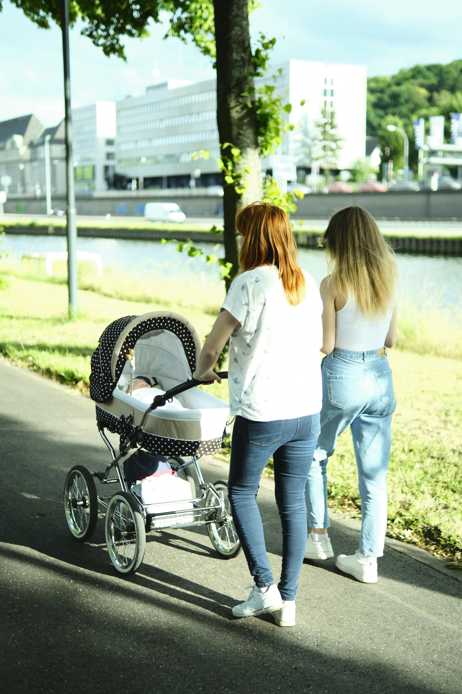
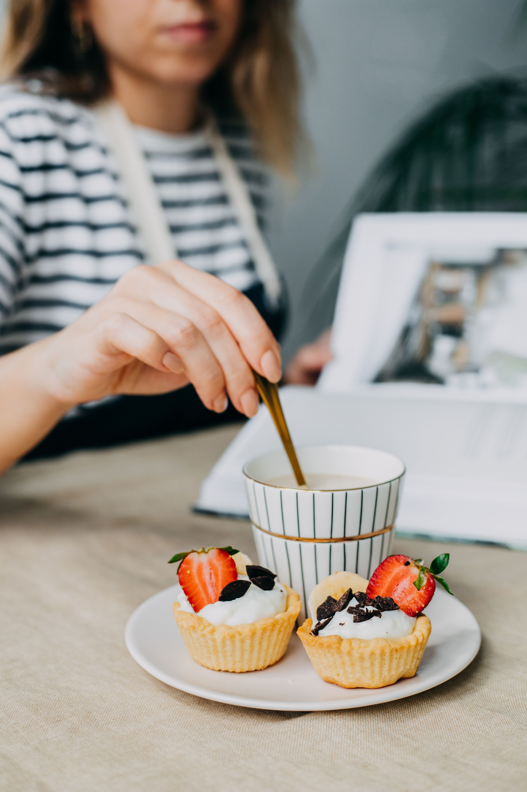
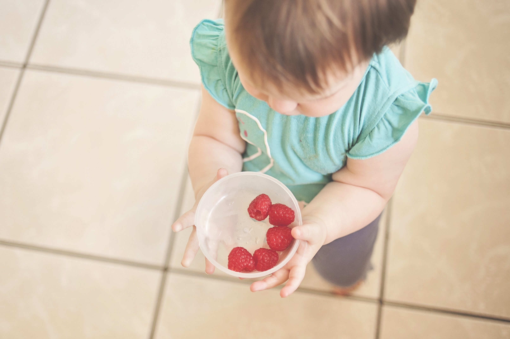

Nya föräldrar ska träffas
Hitta ditt folk i bebisbubblan.
Träffa andra nyblivna föräldrar nära dig. Promenader, fikaträffar, forum och gemenskap utan prestationskrav.
Kom igång
Välj det du behöver just idag

Träffar nära dig
Följ med på en promenad
Hitta lågtröskelträffar där det är okej att komma sent, amma, gå hem tidigt eller bara lyssna.
Utforska grupper
Forum
Fråga någon som är mitt i det
Prata sömn, mat, relationer, oro och vardagsknep med andra som faktiskt förstår tempot.
Gå till forumet
Tips & artiklar
Få idéer som går att göra
Korta guider och aktiviteter för dagar när energin är låg men du ändå vill skapa en fin stund.
Läs tipsen
Aktivt just nu
Små trådar som leder till riktiga möten
Startsidan visar vad som faktiskt händer: frågor, träffar och grupper som andra föräldrar redan använder. Det gör webbplatsen lättare att förstå och mer levande än en statisk informationssida.
Se nya inlägg
Barnvagnspromenad på torsdag?
Någon som vill ses i Slottsskogen och promenera en stund?
Svara i forumet
Populära grupper
Visa alla
Här samlas föräldrarna
Promenadgänget
25 medlemmar
Öppna gruppenFöräldrafika
18 medlemmar
Öppna gruppenNy i stan
12 medlemmar
Öppna gruppen
Dagens tips
Läs tipset
Gör måltiden lite mindre kaosig
Enkla knep för matstunder när både bebis och vuxen börjar bli trötta.